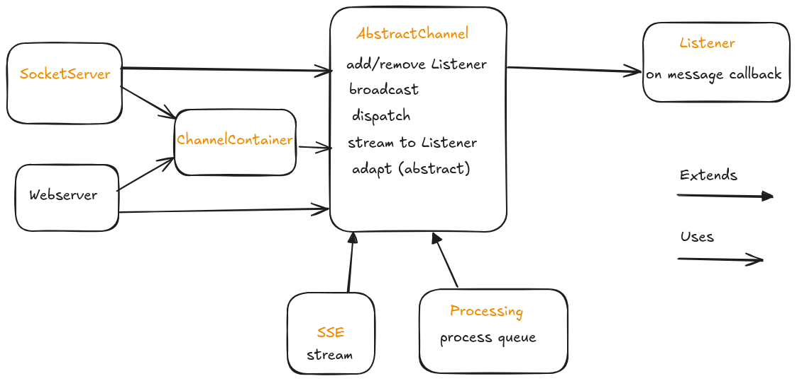

Overview¶
{kind=link}
thanks a lot https://excalidraw.com !!
Entities¶
- class Message(type: str, payload: dict | list | str | int | float | None = None)¶
Models a message
It’s just a container of information identified by a type. For validation purposes you can override MessageQueueListener.on_message
- class SignedMessage(sender_id: str, msg_type: str, msg_payload: dict | list | str | int | float | None = None)¶
A wrapper that adds sender id
- class MessageQueueListener¶
Base class for listeners.
Optionally you can override on_message method if you need to inject code at message delivery time.
- async start() None¶
- start_sync() None¶
- async is_running() bool¶
- is_running_sync() bool¶
- async stop() None¶
- stop_sync() None¶
- class AbstractChannel(stream_delay_seconds: int = 0)¶
Base class for channels.
Provides functionalities for listeners and message delivery management. SSEChannel is the default implementation
- add_listener() MessageQueueListener¶
Add the default listener
- register_listener(l: MessageQueueListener)¶
Adds a listener to channel
- remove_listener(l_id: str)¶
- deliver_next(listener_id: str) Message¶
Returns next message for given listener id.
Raises a NoMessagesException if queue is empty
- get_listener(listener_id: str) MessageQueueListener¶
- async message_stream(listener: MessageQueueListener) AsyncIterable[Any]¶
Entry point for message streaming
In case of failure at channel resolution time, a special message with type=MESSAGE_TYPE_CLOSED is sent, and correspondant listener is stopped
- async watch() AsyncIterable[Any]¶
- notify_end()¶
Broadcasts a MESSAGE_TYPE_CLOSED Message
Prefab channels and listeners¶
- class SSEChannel(stream_delay_seconds: int = 0, retry_timeout_milliseconds: int = 5)¶
Bases:
AbstractChannelSSE streaming channel. See https://developer.mozilla.org/en-US/docs/Web/API/Server-sent_events/Using_server-sent_events#event_stream_format
Currently, ‘id’ field is not supported.
- class DataProcessingChannel(max_workers: int, stream_delay_seconds: int = 0)¶
Bases:
AbstractChannelChannel intended for concurrent processing of data.
Relies on concurrent.futures.ThreadPoolExecutor. Just override adapt method to control output returned to clients
MESSAGE_TYPE_CLOSED type is intended as end of stream. It should be considered as a reserved Message type.
- async process_queue(l: MessageQueueListener) AsyncIterable[dict]¶
Launches the processing of the given listener’s queue
- class SimpleDistributedApplicationListener(channel: AbstractChannel)¶
Bases:
MessageQueueListenerListener for distributed applications
- set_action(name: str, action: Callable[[Message], list[Message]])¶
Hooks a callable to a string key.
Callables are selected when listener processes the message depending on its type.
They should return a list of Messages corresponding to response to action requested. Use ‘stop’ as Message type to stop receiver listener.
Prefab servers and clients¶
- class SSEChannelContainer¶
Helper class for management of multiple SSE channels cases of use.
- class SocketServer(file_descriptor_path: str)¶
An implementation of a socket server that acts as a controller to interact with library
Accepted format: a plain (no nested) JSON with the following keys:
{ "c": "channel id" "v": "verb" "t": "message type" "p": "message payload" "r": "receiver (listener id when verb is 'rl')" }
Possible values of verb identifies a supported action:
"d" dispatch "b" broadcast "c" create channel "r" add listener "l" listen (opens a stream) "w" watch (opens a stream) "rl" remove a listener "rc" remove a channel
See examples
- async shutdown()¶
Graceful Shutdown
- static start(file_descriptor_path: str)¶
Shortcut to start a server
- class SocketClient(file_descriptor_path: str)¶
A little facade to interact with SocketServer
Exceptions¶
- exception InvalidChannelException¶
- exception InvalidListenerException¶
- exception InvalidMessageFormat¶
- exception NoMessagesException¶
Raised when trying to fetch from an empty queue